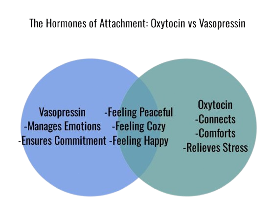
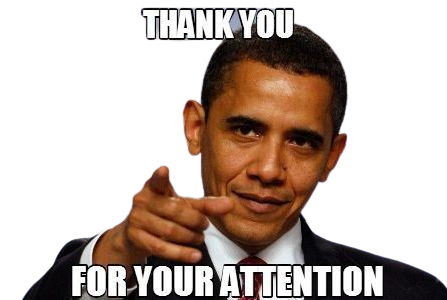

"Hello, everyone! Thank you for joining me in this presentation on the biology of love. You might think that love is a mysterious and magical feeling that defies scientific explanation. But that's not entirely true. In fact, there is a lot of science behind love, and it can help us understand how and why we feel the way we do. In this presentation, we will examine the biological processes of love, from the brain to the body, and how they affect our behavior, health, and relationships."
"So, what is love? Is it an emotion, a state of mind, a decision, or something else? Well, according to science, love is a mix of three main elements: lust, attraction, and attachment. These elements are influenced by different molecules, hormones, and genes in our body, and they can change in strength and duration depending on the person and the situation. Let's take a closer look at each of these elements and how they work."
"The first element of love is lust, which is driven by the need for sexual satisfaction. Lust is activated by the sex hormones testosterone and estrogen, which are produced by the testes and ovaries. These hormones boost our sexual drive and make us more open to potential partners. Testosterone and estrogen are not only in charge of sexual development and function, but also of affecting our behavior, mood, and thinking. For instance, testosterone can increase aggression, confidence, and competitiveness, while estrogen can improve mood, memory, and empathy. The levels of these hormones can vary depending on age, gender, health, and environmental factors. Lust is the most basic and primal form of love, and it is common to many animals."
"The second element of love is attraction, which is the feeling of being drawn to someone and wanting to be with them. Attraction is more than just physical appearance. It also involves personality, humor, intelligence, and other factors that make someone attractive to us. Attraction is affected by several chemicals in the brain, such as dopamine, norepinephrine, and serotonin. These chemicals make us feel thrilled, happy, and ecstatic when we see or think about our crush. They also make us concentrate on the positive aspects of our partner and overlook the negative ones. Dopamine is a neurotransmitter that is involved in reward, motivation, and pleasure. It is released when we enjoy something, such as food, music, etc.. . Norepinephrine is a hormone and a neurotransmitter that is involved in arousal, alertness, and attention. It raises our heart rate, blood pressure, and breathing when we face a challenge or a danger. Serotonin is a neurotransmitter that is involved in mood, emotion, and social behavior. It controls our appetite, sleep, and memory. Low levels of serotonin can cause depression, anxiety, and obsessive-compulsive disorder. Attraction is the stage of love that makes us want to start a relationship and get to know someone better."
"The last and most important element of love is attachment, which is the feeling of being loyal and devoted to someone. Attachment is what makes us want to stick with our partner for the long haul, and maybe even have children with them. Attachment is controlled by two main hormones: oxytocin and vasopressin. Oxytocin is also called the 'love hormone' or the 'snuggle hormone', because it is released when we embrace, kiss, or snuggle with someone. Oxytocin helps us connect with our partner and feel a sense of safety and comfort with them. It also plays a role in motherly behavior, social recognition, and stress relief. Vasopressin is also involved in attachment, as well as in managing our emotions and behavior towards our partner. Vasopressin helps us keep our faithfulness and commitment, and avoid potential dangers or competitors. It also plays a role in water balance, blood pressure, and aggression. Attachment is the stage of love that makes us feel peaceful, cozy, and happy with our partner."
"In conclusion, love is not just a mysterious and magical feeling. It is also a biological phenomenon that involves our brains and bodies. Love is composed of three main elements: lust, attraction, and attachment. These elements are influenced by different molecules, hormones, and genes that affect our emotions, behavior, health, and relationships. By understanding the science of love, we can better appreciate the complexity and diversity of this human experience. Thank you for your attention, and I hope you enjoyed this presentation."
Made with love by Ahmed Touhami ❤️